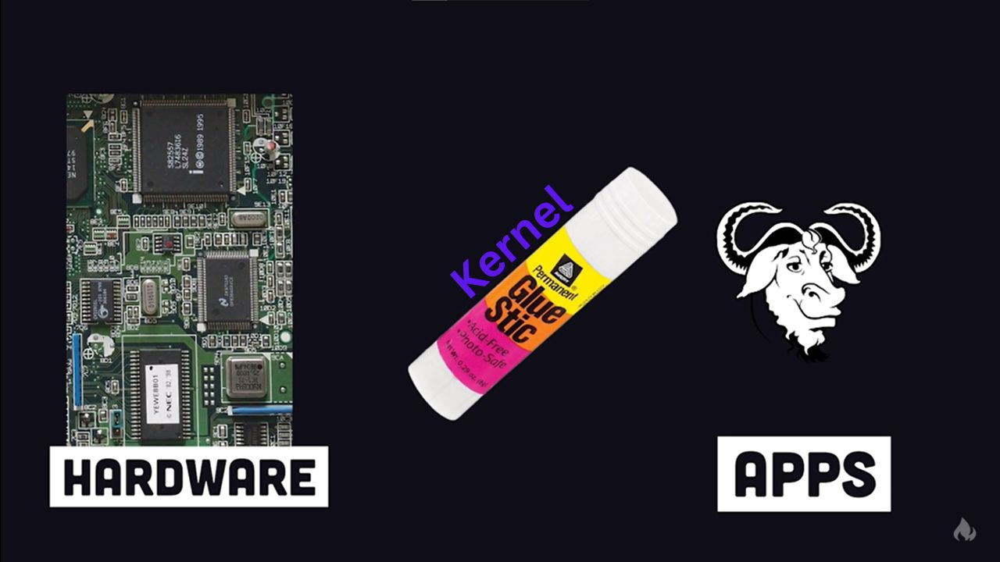

Why is the penguin so menacing?

The Monolithic Linux Kernel

Kernel is the binding element that binds the OS and the hardware
OOOO It's smoking smooth!!
A monolithic kernel is a type of operating system (OS) architecture where the entire operating system, including core functions like memory management, process scheduling, file system management, and device drivers, runs in kernel mode as a single, unified program.
- Single Large Process – The entire OS runs as a single process in privileged mode.
- High Performance – Since all services run in kernel space, there is minimal overhead, making monolithic kernels generally faster than microkernels.
- Difficult to Modify – Any change to the kernel (e.g., adding a driver) requires recompiling and rebooting.
- Less Stability – A crash in one component (e.g., a device driver) can crash the entire system.
Did I say it was free and better than NT kernel paid for by the users and used in windows?
Facts about Linux and it's Users!!
- Yes, Linux is a kernel
- Yes, Linux and GNU were both initiated by two bored guys who didn't want to pay for their software
- Yes, Linux users are superior.
- Yes, GNU is an OS.
- Yes, Linux users do have a social life.
Software is like Sex, It's better when it's free
~Linus Torvalds
~Linus Torvalds